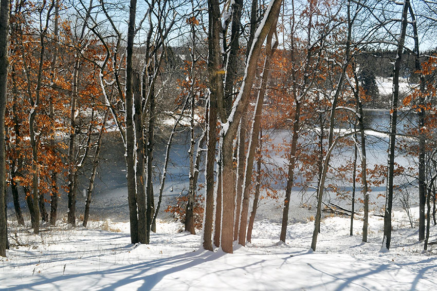
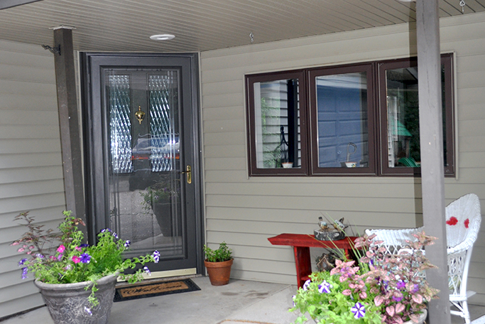
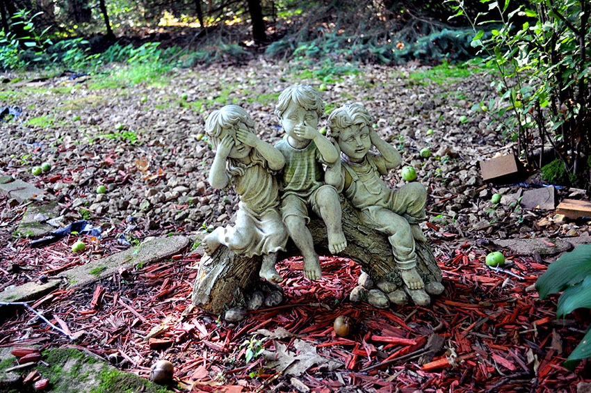
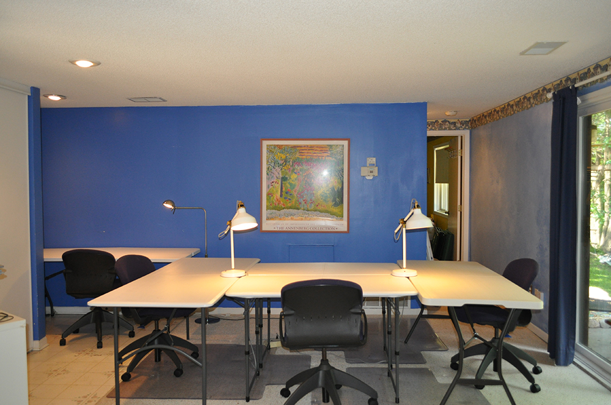

Shutter-fly / Scrap Booking / Quilting / Painting / Jewelry Create Mania Days.
WEDNESDAY'S & THURSDAY'S 10:00 a.m. to midnight
(Every week unless booked for special events)
$20 per person and every 5th session is FREE (punch cards available).
8 workstations and RSVP taken same day..



